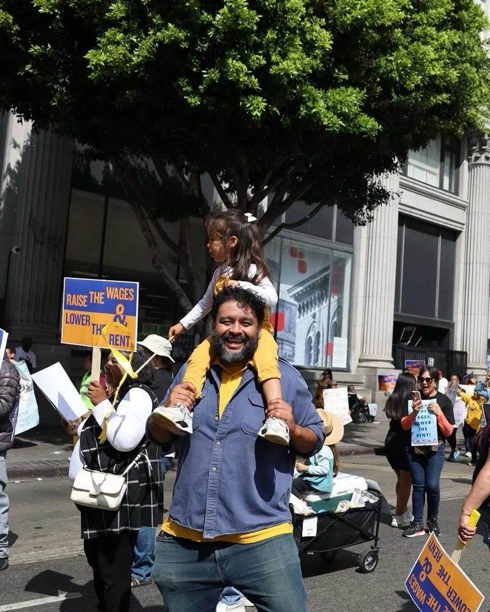

Estuardo
Mazariegos
For Los Angeles City Council, District 9
Lower rents.
Endorsed by United Teachers Los Angeles and U.S. Senator Bernie Sanders.
Make your plan to vote
One of us
Estuardo came to Los Angeles as a child, fleeing political violence. He's a father and a community organizer who has spent 20 years fighting for families in South Central, and winning.
He has taken on City Hall and won, again and again, for tenants, homeowners, and working families.
Estuardo takes no corporate money. On the City Council, he'll answer to the people who live here.
The choice for City Council
Estuardo Mazariegos
- Community organizer, 20 years in South Central
- Only corporate-free candidate in this election
- Endorsed by our teachers, healthcare workers, tourism workers, elected officials, community organizations, and U.S. Senator Bernie Sanders
- Led and won the fight to protect tenants from bad landlords and corporate harassment
- Saved thousands of South LA homeowners from foreclosure
- Stopped massive annual rent increases for thousands of working families
- Fought for billions of dollars in ongoing funding for affordable housing and preventing homelessness
Jose Ugarte
- More than a decade inside City Hall
- Fined $25,000 by the L.A. Ethics Commission for failing to disclose years of income from his lobbying and consulting firm
- Former lobbyist for one of the country's largest health insurance companies
- Landlord
- Backed by nearly $1 million from independent groups, including Airbnb and the California Apartment Association, the landlords' trade group
What Estuardo will do
-
End the homelessness crisis with housing and services
Homes for our neighbors, and the services they need to stay housed, so our streets and parks are clean and safe for everyone.
-
Fix our streets, sidewalks, and streetlights
South Central has gone without the basics for too long. Estuardo will make sure our council office delivers them.
-
Lower the cost of living for working families
From rent to groceries, costs keep climbing for renters and homeowners alike. Estuardo will keep rents in check, protect homeowners from foreclosure and rising costs, and bring good-paying jobs close to home.
-
Clean up our streets. Clean up City Hall.
A council office that works for the neighborhood, not for insiders fined for City ethics violations.
Our teachers trust Estuardo
Endorsed by
United Teachers Los Angeles and U.S. Senator Bernie Sanders, along with the National Union of Healthcare Workers, SEIU Locals 1000 and 2015, SEIU-USWW, and the Los Angeles League of Conservation Voters, back Estuardo because he has the experience to hold City Hall accountable, make our neighborhoods cleaner and safer, and lower the cost of living.
Vote Tuesday, Nov. 3
Your ballot comes in the mail. Fill it out, sign the envelope, and return it by mail, at any official drop box, or at a vote center. Check your registration and find the vote center nearest you with the L.A. County Registrar.
Find your vote centerQuick answers
Who is running for L.A. City Council District 9?
Estuardo Mazariegos and Jose Ugarte are on the ballot in the general election on Tuesday, Nov. 3, 2026. The seat is open.
Who is Estuardo Mazariegos?
Estuardo came to Los Angeles as a child fleeing political violence. He's a father and a community organizer who has spent 20 years fighting for families in South Central. He led and won the fight to protect tenants from bad landlords and corporate harassment, and fought for ongoing funding for affordable housing and preventing homelessness.
Who has endorsed Estuardo?
United Teachers Los Angeles, U.S. Senator Bernie Sanders, the National Union of Healthcare Workers, SEIU Locals 1000 and 2015, SEIU-USWW, and the Los Angeles League of Conservation Voters, along with tourism workers, elected officials, and community organizations.
Does Estuardo take corporate money?
No. Estuardo refuses all corporate campaign contributions. He is the only corporate-free candidate in this election.
When is the election?
Tuesday, Nov. 3, 2026. Every registered voter in L.A. County gets a ballot in the mail. You can return it by mail, at an official drop box, or at any vote center.
Sources
- L.A. City Ethics Commission, stipulation and order in Case No. 2022-028 (Jose Ugarte), approved Feb. 18, 2026
- MyNewsLA, "LA Ethics Commission to Fine Council Candidate," Oct. 22, 2025
- LAist, on Airbnb-funded spending supporting Ugarte, April 24, 2026
- The Wave, "9th District: Black residents will be heard, candidates say"
- United Teachers Los Angeles, 2026 endorsements
- Common Dreams, on Bernie Sanders' 2026 endorsements, May 15, 2026
- Los Angeles League of Conservation Voters endorsement, April 2, 2026
- Progressive Voters Guide, Estuardo Mazariegos
- Our Revolution endorsement, Estuardo Mazariegos